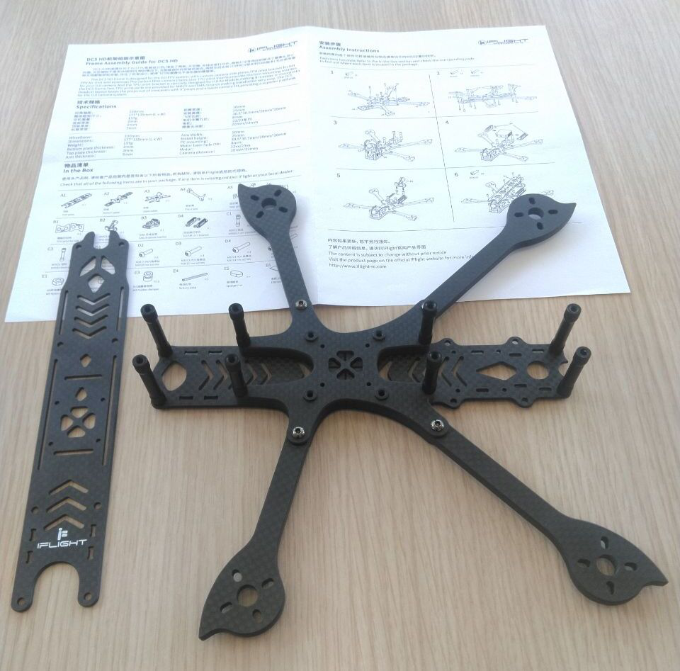
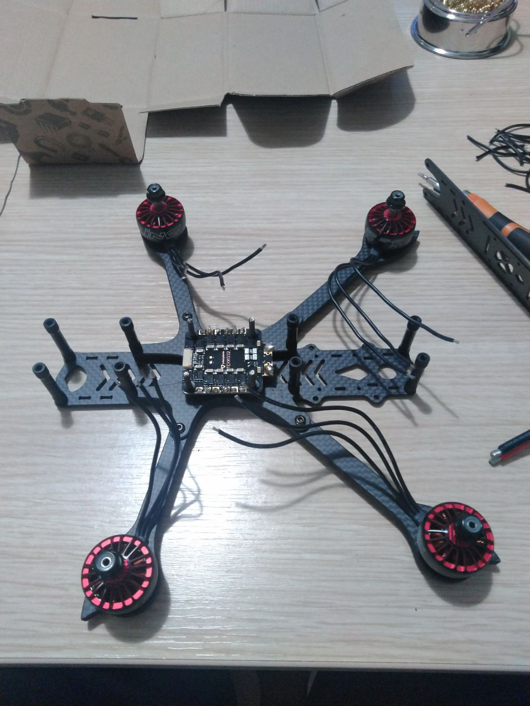
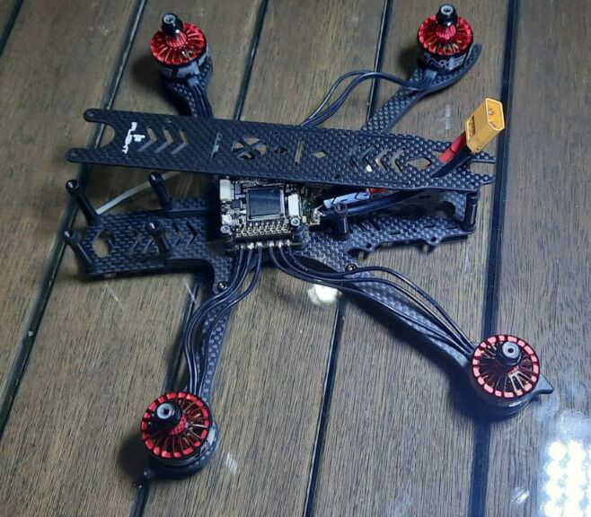

FPV Drones
Drones have become very popular in the recent years. Different types of drones are used for various areas. Maybe one of the coolest type is the FPV drones. FPV stands for first person view. As the name suggests, it is a kind of experience like seeing the world in the eyes of the drone.
The whole operation is quite complex but not impossible with the current technology. A tiny camera is placed at the head of the drone with a proper angle and the video is instantly sent to the googles of the pilot through the transmitter. The pilot decides movement by watching instant footage video and perform flight control commands through controller. The control commands are sent to drone through the transmitter of the controller and the speed of the motors are instantly updated to apply the maneuver that the pilot wants.
After I decided to build my own FPV drone, the first thing I did was collecting the necessary components like frame, motor, controller, googles, propellers etc.

Basically, fpv drones are divided into two groups according to the signal type they use such as anaolog and digital. In analog system, the video is sent from drone transmitter to receiver of the pilot's googles via analog signals. On the other hand, digital signals are used while transmitting video from drone transmitter to googles of the pilot in digital systems.

Both digital and analog systems have pros and cons. Digital systems are capable of trasmitting higher quality video which makes the flight experince outstanding. However digital systems have more latency issues than analog systems.

We are not living in the ideal world, so the latency issue is inevitable. However in some digital systems expecially the old ones, the latency is extremely high and changeable. This could become a serious problem during the flight, because video comes too late also duration latency is not constant. Therefore the pilot could makes wrong decisions by watching older scene and even cause the drone to crash. Therefore for flights in tiny places like indoor analog could be a better option. On the other hand, digital could be better for outdoor cruising flights.
